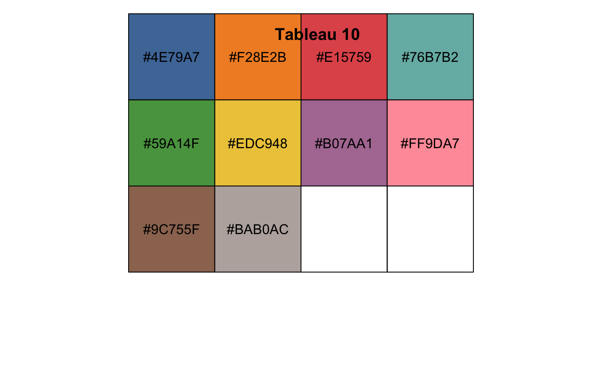
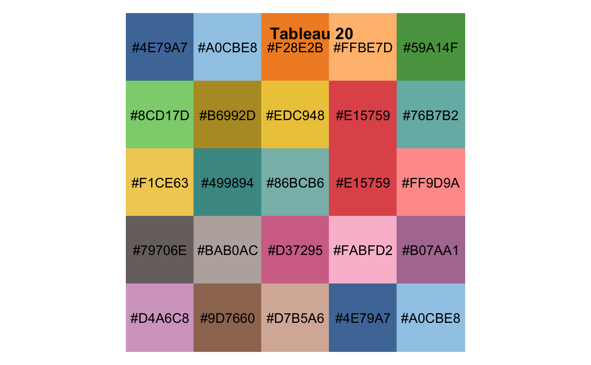
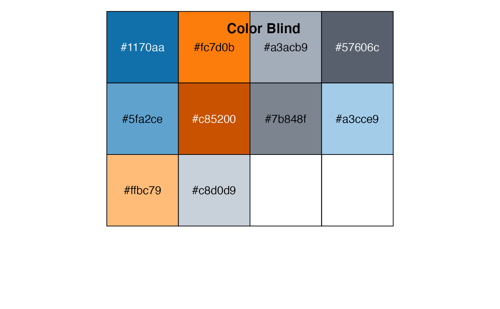
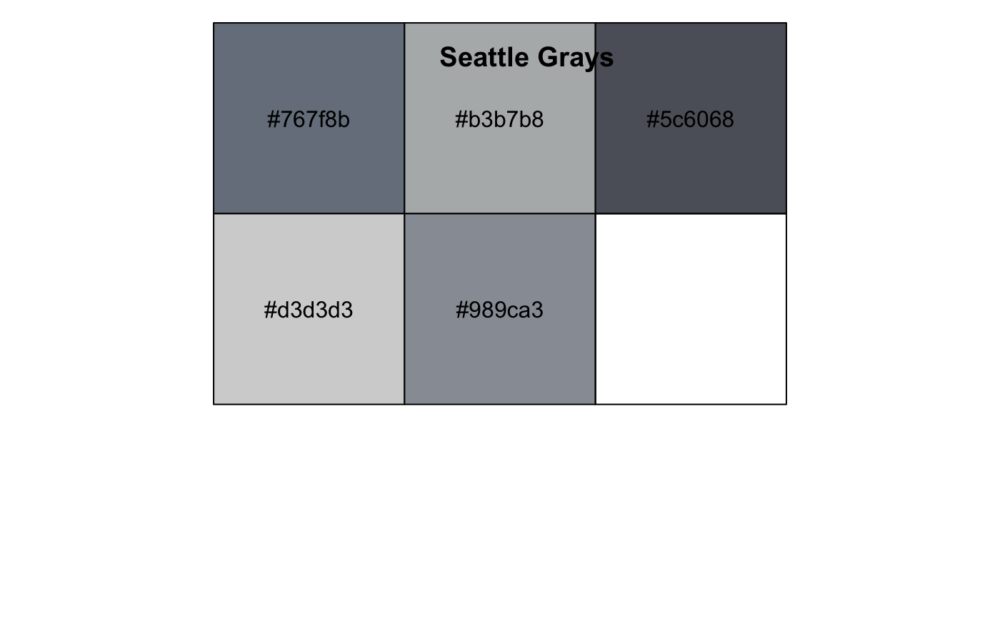
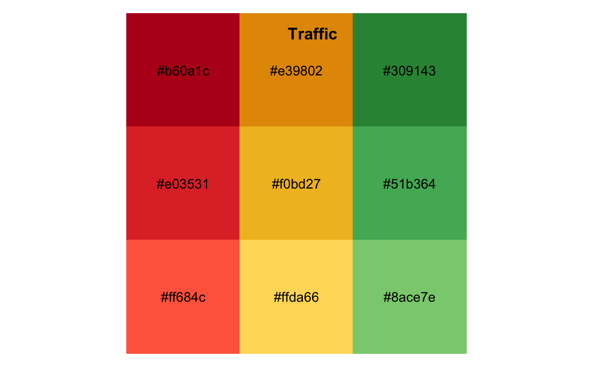
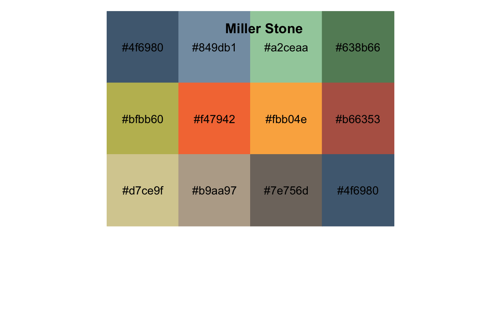
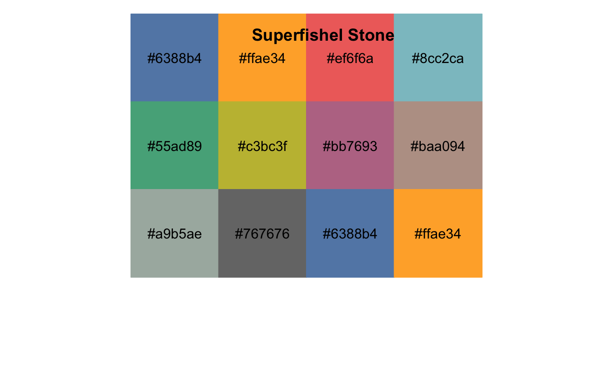
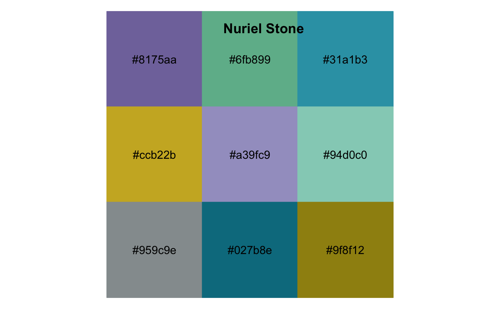
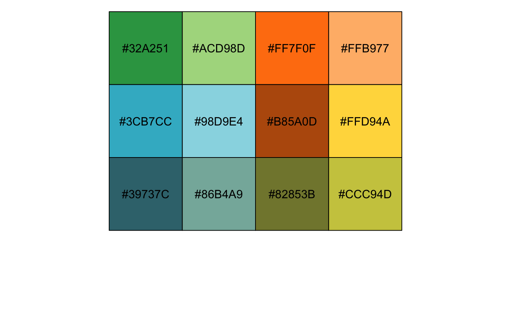
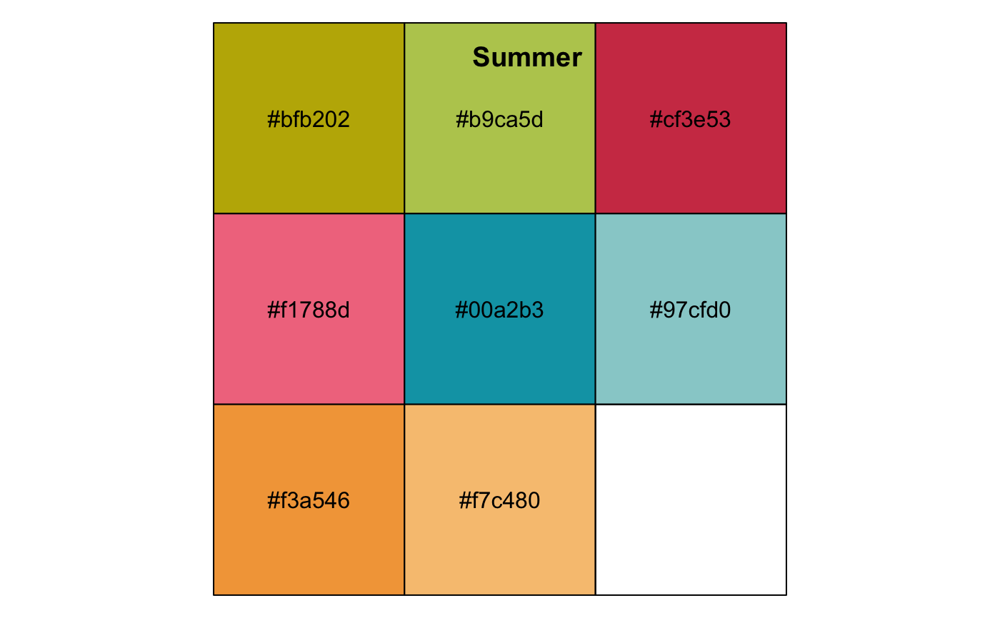

Color palettes used in Tableau.
tableau_color_pal(palette = "tableau10")
| palette | Palette name. |
|---|
The number in some palette names indicates the maximum number of
values supported, e.g tableau20 supports up to 20 values.
"trafficlight" supports up to nine values, and "cyclic"
supports up to 20 values.
http://vis.stanford.edu/color-names/analyzer/
Maureen Stone, 'Designing Colors for Data' (slides), at the International Symposium on Computational Aesthetics in Graphics, Visualization, and Imaging, Banff, AB, Canada, June 22, 2007 http://www.stonesc.com/slides/CompAe%202007.pdf.
Heer, Jeffrey and Maureen Stone, 2012 'Color Naming Models for Color Selection, Image Editing and Palette Design', ACM Human Factors in Computing Systems (CHI) http://vis.stanford.edu/files/2012-ColorNameModels-CHI.pdf.
Other colour tableau: scale_colour_gradient2_tableau,
scale_colour_gradient_tableau,
scale_colour_tableau,
tableau_div_gradient_pal,
tableau_seq_gradient_pal
